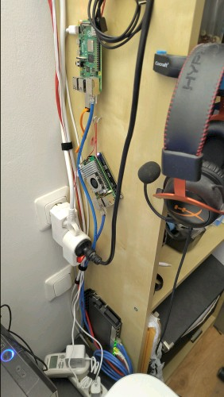

My digital sovereignty actions¶
Digital sovereignty refers to owning or having control over your data and digital services. This post talks about what I do.
I’m interested in this not just to get away from US-based companies, but for preparing for the internet to get more locked down and closed with things like age verification, forced identification, etc.
A basic goal is I’d like to do things that I can recommend to others. I used to self-host many things (like my own email, web servers, etc.) and still could, but I am much busier now. Furthermore, not everyone can or has time to self-host things. I would rather learn and use things that I can recommend to, for example, my parents and friends, rather than the theoretical perfect thing for a person with plenty of time. As you’ll see, I have various things at different levels of from “self-hosted” to “cloud”.
Proton services¶
I use Proton for my email, with my own domain. I pay for this. The custom domain setup was extremely easy (though of course I’m an expert here, but still… it’s almost doable by anyone).
With plans above the minimum, you get an incredible amount of stuff:
mail (works well)
calendar (I don’t really use)
drive (works well, but I don’t sync my computer to it)
docs (working, including spreadsheets), but not good enough for my primary use yet.
password manager (this has been an unexpectedly useful for me)
VPN
The basic benefits of Proton are client side encryption, being exclusively funded by users, mostly controlled by a foundation, and having a critical mass to continue developing services and expanding. Their goal is to make good services which are intended for wide adoption (not theoretical perfection), which is a trade-off I support. Other basics, like clear backups and recovery (which is difficult with client side encryption) are taken seriously and made usable, so that (for example) my parents would not lose all their data if they do the backup/recovery steps suggested.
Is Proton bad?
I often see complaints about Proton in the news, but in my analysis most are unfounded. They are a serious company making the hard trade-offs needed to provide a service to as many people as possible, which I think is good. I think most complaints (while having a factual basis) are either general negativity, or perhaps targeted attacks.
Cryptpad¶
Cryptpad is a web-based client-side encrypted drive service. It has OnlyOffice as a document suite, providing very high quality documents, spreadsheets, presentations, etc. It also has forms and markdown document support. I know crypto researchers what have colleagues who develop on CryptPad and recommend it, so that’s a good review to me. It’s run by a French company.
I don’t pay for this and get 1 GiB free. I used this when I needed competent office suites or documents I can share via a link, but I don’t use it for much else. Sign-up was completely anonymous (and you can even do basics without registering).
Home servers¶

I have two Raspberry Pis running stock Raspberry Pi OS. (There are other Raspberry Pi images that are designed to host home services more easily, but I could manage them myself. Also, someday I may switch to raw Debian.)
A Raspberry Pi 4 serves as an internal file server, though the files are just stored on USB flash drives so it’s not a fully developed, backed-up NAS yet. Sometime I’d want to make it a full RAID array. One USB drive holds basic shared files, one USB drive is backups. (I need to set up better off-site backups.) This one basically runs Samba with world-rw permissions, but is inside our internal network so guests don’t have access.
A second Raspberry Pi 5 serves as a web server. It has a dual M2 NVMe hat with (currently) one 500 GiB NVMe. Nginx serves as a reverse proxy and various servers run in Docker. This is accessible to the world and is in the guest network.
I got Raspberry Pis since it’s a Europan company and I wanted new things that would have a long lifetime. To increase reliability, I made the root filesystem on the SSD cards to read only (Notes on Debian with a read-only root). The idea is I want to treat these like an appliance with a long lifetime, not so getting I mess with all the time.
Self-hosted Nextcloud¶
On the Raspberry Pi, I installed Nextcloud via the “all in one” distribution. With this, you pull one docker image and it controls the swarm of other docker images. The interface seems quite well developed and while this self-hosting is still advanced, the barrier to using it was much less than I expected. There have been some problems I have had to solve with my Linux experience (partly caused by my particular setups), which makes it hard to recommend this for everyone.
This is all self-hosted at home. I could use a VM somewhere, but I haven’t wanted to go that far and pay for that yet.
I learned that Nextcloud isn’t just a drive thing, but has a huge variety of apps built in. It has user management and file storage, but also things like a teleconference solution (what I use to talk to my parents now), chat, documents, calendar, etc. It’s basically a full replacement for Google Workspace / Microsoft stuff, and really could be used by an organization to replace those US services.
Drive: store files via the web, Android sync, etc. It can even use SMB as a storage backend, so in theory the NAS could be the file storage.
Deck (task management / kanban)
Talk (chat and video chat. I use this to talk to my parents now)
Notes
And much more.
The office suite is either Collabora (which I think is LibreOffice based), or OnlyOffice like Cryptpad. I found OnlyOffice to be better, but the EuroOffice project was started and is forking OnlyOffice to improve it some. EuroOffice is actually a collaboration among many companies that includes Proton, Nextcloud and Xwiki (the company behind CryptPad)
NextCloud had good apps for Android, and is taking over some of the basic note taking and task management I need to do (for example I am drafting this post in the Notes app). The office suite isn’t good enough for me to fully replace Google Docs yet.
So, while this self hosting is still not in the reach of everyone, this is on the easy side of self-hosting. Still, self hosting has a lot of things that can go wrong (I’ve already had to fix various things), so it’s hard to recommend this to everyone.
Desktop computers¶
My desktop runs Debian (“Linux”). It’s been stable for ages and is nice and boring.
Networking and routers¶
I have two Mikrotik network devices in my home, one router and one PoE ceiling mounted access point. Mikrotik is a Latvian company, and their device are known to be very powerful but hard to use, which is the trade off I don’t mind making. The easy setup was easy enough for anyone, and the powerful interface wasn’t that hard, if you know Linux networking (there is always the difficulty that if you can do anything, you want to and it gets complicated. The basics are easy enough to do) - and really, a huge amount of Linux networking capabilities are exposed. They can be used fully without any cloud services.
My home cable modem/router (provided by the ISP) is in bridge mode (routing/firewall by own router), so that it has no access to the rest of the internal networks. Internally, I have a networks:
primary (own devices)
guest (guests and insecure)
IoT (no access to the internet, I can access from the primary network) (not that I have IoT devices yet anyway)
VPN (this is routed so that in can only access the internet through Proton VPN, which runs on the router. It’s also exported to the wired network with a tagged vlan, that I can access from a vpn-only virtual machine on my desktop. I don’t use it for much but it was a fun diversion / good proof of concept.)
ipv6-only (with native ipv6 connectivity, and only that. I don’t use it for anything but it was educational setting it up.)
I invested in these to prepare for a future when routers might get more locked down and I need to be more self-sufficient.
One future goal is to give my home two public IP addresses: one for my home’s outgoing traffic, one for incoming web traffic.
Phone¶
I have a Fairphone 5 running the stock OS. This is at least a European company and doesn’t forcibly install much extra stuff. Updates come a bit slow, but the hardware seems perfectly suitable for my uses.
For a travel phone I installed e/OS on an old Pixel 3a. e/OS seems like it worked well and is an option for my main phone if I ever needed to get away from Google.
To talk to people I only use Signal. Yes, it is US-based but it is run by a nonprofit and has the right balance of usability and security. If this ever goes down, I will have Nextcloud Talk (self-hosted) (the chat function) that I can use for the people closest to me, even from phones.
I’d want to improve phone stuff later, but it hasn’t been a focus so far.
ToDo¶
I need a better backup solution. The best I am thinking is some client-side encrypted backup to a public cloud cold storage object storage. Backups and disaster recovery (or lack thereof) is a major risk when people try to self-host things.